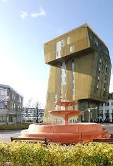
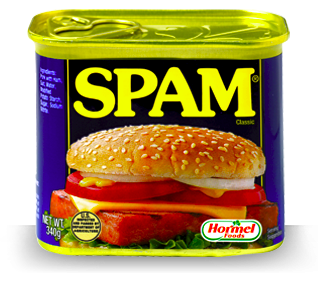

Fraaie plaatjes#
Voorbereiding#
Download Python plaatjes.
Dit bestand moet ergens uitgepakt worden. Het bevat een aantal bestanden die allemaal in dezelfde map moeten staan:
fraaie_plaatjes.py(het bestand dat je gaat uitvoeren!)spam.pngin.pngout.pngzp7.pngpng.py
Het bestand dat we gaan bewerken is de afbeelding spam.png. Verder zijn er nog twee andere voorbeelden:
Het meegeleverde bestand in.png: 
Het aangepaste (geïnverteerde) bestand out.png: 
Hier is ook de originele en een geïnverteerd afbeelding van een bekend gebouw op de Zernikecampus in Groningen, de Van Olsttoren:


import python bestand.#
Naast het importeren van bestaande libraries kunnen we ook onze eigen python bestanden toevoegen. We kunnen dan onze eigen functies gebruiken in het python bestand. Zo kan je functies hergebruiken of een groot programma opsplitsen in verschillende delen.
Bovenaan fraaie_plaatjes.py staat de code
from png import *
Deze aanroep importeert het bestand png.py dat ook in de map staat dat is gedownload. Dit python bestand behandeld het openen, lezen en opslaan van images. Door het importeren van dit bestand kunnen we alle functies van png.py gebruiken.
Onze PNG module#
Voor dit probleem ga je gebruik maken van een Python module die png-afbeeldingen leest en schrijft. Gelukkig hebben zowel macOS, Linux als Windows ingebouwde programma’s (Preview, EoG, Paint) die bijna elke afbeelding omzetten naar het “portable network graphics†formaat (oftewel PNG).
Belangrijk
Voor deze opgave zal je Pillow nodig hebben, een Python module voor het bewerken van afbeeldingen waar onze png.py module weer gebruik van maakt. Installeer het als volgt als je deze nog niet hebt
pip install Pillow
Opdracht 1: Uitproberen#
Probeer fraaie_plaatjes.py op de gebruikelijke manier uit.
Door dit te doen wordt de functie invert() uitgevoerd
Voor de volledigheid is hier de code van deze functie:
def invert():
""" run this function to read in the in.png image,
change it, and write out the result to out.png
"""
im_pix = get_rgb('in.png') # lees het bestand in.png in
print("De eerste twee pixels van de eerste rij zijn", im_pix[0][0:2])
#
# Onthoud dat im_pix een lijst (de afbeelding) van
# lijsten (elke rij) van lijsten (elke pixel is [R,G,B]) is
#
new_pix = [[change(p) for p in row] for row in im_pix]
# sla nu het bestand 'out.png' op
save_rgb(new_pix, 'out.png')
b. Lees deze functie door om een idee te krijgen van hoe je afbeeldingen kan inlezen, wijzigen en uitvoeren. Denk alvast na over de datastructuur van im_pix, en de andere met dezelfde structuur, new_pix. De volgende paragraaf zal hier bij helpen…
Datastructuur#
De relevante datastructuur in bovenstaande code is im_pix, die alle pixelgegevens van de afbeelding bevat.
Maar welke vorm heeft deze datastructuur? Het is noodzakelijk dit te weten om de data aan te kunnen passen!
im_pix is een lijst van rijen pixels.
Elke rij pixels bestaat op zijn beurt uit een lijst van pixels.
Elke pixel bestaat op zijn beurt uit een lijst van drie integers: de rood-, groen- en blauwwaarde van de pixel (elk van 0 tot en met 255).
Hier is een voorbeeld van een volledige afbeelding van 2x3 pixels (met twee rijen van drie pixels per rij):
im_pix = [
[[0, 0, 255], [0, 0, 255], [0, 0, 0]], # eerste rij van drie pixels
[[255, 255, 255], [255, 0, 0], [0, 0, 255]], # tweede rij van drie pixels
]
In dit voorbeeld zijn de pixels linksboven en middenboven puur blauw, en de pixel rechtsboven is zwart. De pixel linksonder is wit, de pixel middenonder is rood en de pixel rechtsonder is blauw.
Met pixels van het formaat als in een computerspel uit de jaren zeventig ziet de afbeelding er als volgt uit:

De list comprehension in de functie convert heeft twee niveaus:
Het buitenste niveau loopt door elke rij van de afbeelding (elke rij wordt
rowgenoemd, de variabele voor dat gedeelte)De code voor dit buitenste niveau is
for row in im_pix
Het binnenste niveau loopt door elke pixel van de afbeelding heen (elke pixel krijgt de naam
p, de variabele voor dit gedeelte)De code voor dit binnenste niveau is
for p in row
Vergeet niet dat
pzelf een lijst van drie integers is:[red, green, blue]
Met dit model in gedachten ben je klaar om de gegevens te “herschikken†zoals je dat wilt! Dat is de volgende stap…
Luminantie#
Eerst zullen we ons richten op operaties op pixelniveau. Voor het maken van grijswaarden- en binaire beelden zal je je moeten richten op de relatieve luminantie. In essentie is dit hoe helder of donker de kleuren in een pixel zijn (in vergelijking met wit).
Zoals Wikipedia het berekent, is de luminantie 21% rood, 72% groen en 7% blauw. Intuïtief is dit logisch, want als je denkt aan standaard rood, groen en blauw, dan is groen het lichtste en heeft dus het grootste positieve effect op de luminantie, terwijl blauw donkerder is en een lagere waarde heeft voor de luminantie. Dit is nuttig! Je gaat de luminantie berekenen voor pixelbewerkingen.
Spelen met pixels#
We hebben je een functie invert gegeven en die een beeld wijzigt om het negatief te creëren. Dat wil zeggen, alle kleurwaarden zijn 255 min hun oorspronkelijke waarde. Let vooral op het gebruik van de list comprehension in invert, die elke pixel in de afbeelding langsloopt (itereert) en change(p) aanroept.
Het is het gemakkelijkst om ook greyscale en binarize in hetzelfde formaat te schrijven: een hoofdfunctie die gebruikersinvoer accepteert en een list comprehension bevat die een hulpfunctie voor elke pixel aanroept.
Opdracht 2: greyscale()#
Schrijf nu een functie greyscale en die een afbeelding wijzigt naar grijswaarden. Hiervoor zul je iets moeten doen dat lijkt op invert, behalve dat de nieuwe functie change de luminantie van de pixel zal berekenen zoals hierboven beschreven. Aangezien luminantie een maat is van hoe wit of zwart een pixel is, is het eenvoudig om een lijst met RGB-waarden in grijswaarden terug te geven, geef gewoon dezelfde waarde in elk kleurkanaal teruggeven!


Een afbeelding voor en na de conversie naar grijswaarden (luminantie).
Krijg je de fout OverflowError: unsigned byte integer is greater than maximum? Dit kan komen doordat jouw luminantieberekening resulteert in RGB-waarden die hoger zijn dan 255. Zorg ervoor dat al jouw percentages optellen tot precies 1.
Als je de fout filename is not defined krijgt, controleer of er aanhalingstekens om de bestandsnaam staan en dat het bestand aanwezig is in dezelfde map als je Python script.
Krijg je de fout filename is not defined? Zorg ervoor dat er aanhalingstekens om de bestandsnaam staan wanneer je deze aanroept in de IPython shell. Zorg er ook voor dat de afbeelding in dezelfde map staat als je Python-script, en dat de afbeelding de juiste permissies heeft.
Opdracht 3: binarize(thresh)#
Schrijf een functie binarize(thresh), die een afbeelding binair (zwart-wit) maakt met een drempelwaarde thresh gegeven door de gebruiker. Deze drempelwaarde is een helderheidswaarde tussen 0 en 255, als een pixel groter is dan de drempelwaarde, dan moet het wit worden, en als het minder is dan de drempelwaarde, dan moet het zwart worden. Dus, een drempelwaarde van 0 betekent dat je afbeelding zuiver wit wordt en een drempelwaarde van 255 betekent dat je afbeelding zwart wordt.

Binaire spam met een grenswaarde van 100.
Geometrische transformaties#
Opdracht 4: flip_vert()#
Schrijf de functie flip_vert, waarbij de afbeelding op de horizontale as wordt omgedraaid (de onderkant is aan de bovenkant en de bovenkant aan de onderkant). Je gebruikt hiervoor dezelfde basisstructuur als bij de eerdere opgaven, een hoofdfunctie die het bestand opent en de hulpfunctie aanroept in een list comprehension.
In flip_vert zal je alleen de rijen moeten langslopen in plaats van de pixels in im_pix, en de volgorde omkeren. Onthoud dat als L een lijst is, dan is L[::-1] het omgekeerde van die lijst.

in.png verticaal omgedraaid.
Opdracht 5: flip_horiz()#
Schrijf de functie flip_horiz, die een afbeelding draai om zijn verticale as. Dit moet op dezelfde manier werken als flip_vert, maar draait in de horizontale richting. In plaats van de rijen te verschuiven zal je nu moeten bedenken hoe de pixels in de rijen worden verschoven als een afbeelding horizontaal wordt gespiegeld. Merk op, in.png horizontaal spiegelen heeft geen effect omdat de afbeelding symmetrisch is ten opzichte van de verticale as…

MAPS!
Opdracht 6: mirror_vert()#
Schrijf de functie mirror_vert, die de afbeelding over de horizontale as (d.w.z. dat het bovenste deel ondersteboven wordt gespiegeld aan de onderkant van het beeld). Het eenvoudigst is om de onderste helft van im_pix te vervangen door de omgekeerde rijen van de bovenste helft. Om dit te doen, gebruik je de ingebouwde functie get_wh() in png.py om de hoogte van im_pix te bepalen.

in.png verticaal gespiegeld
Waarschuwing
Je kan geen kopie maken van een lijst met list1 = list2, omdat Python in plaats van een nieuw object te maken, gewoon een nieuwe verwijzing naar de oude lijst zal maken. Het slicen van lijsten maakt echter wel nieuwe kopieën van lijsten, dus bedenk hoe je twee slices, elk half zo groot als de originele lijst, kan combineren om de afbeelding te spiegelen.
Opdracht 7: mirror_horiz#
Schrijf de functie mirror_horiz die gelijk is aan de functie mirror_vert, maar dan over de verticale as. In plaats van de onderste rijen te vervangen door de omgekeerde bovenste rijen (zoals in mirror_vert), vervang je de laatste helft van de pixels in elke rij door de omgekeerde eerste helft van de pixels.

De belangrijkere vraag is, welke kant maak je eerst open?
Opdracht 8: scale#
Schrijf de functie scale, die de afbeelding verkleint naar de helft van de oorspronkelijke afmetingen (dit zal een kwart van het oorspronkelijke oppervlakte zijn). De eenvoudigste manier om dit te doen is om elke tweede pixel in elke rij te verwijderen (het afbeelding horizontaal te schalen) en elke tweede rij te verwijderen (de afbeelding verticaal te schalen).
Opdracht 9 Meer transformaties#
Mocht je jouw eigen effecten willen creëren, dan willen we ze graag zien! Voeg zeker een commentaar of toe om uit te leggen wat je hebt gedaan. Laat je fantasie de vrije loop!
Voel je ook vrij om een paar afbeeldingen naar eigen keuze toe te voegen die je algoritmisch hebt aangepast…